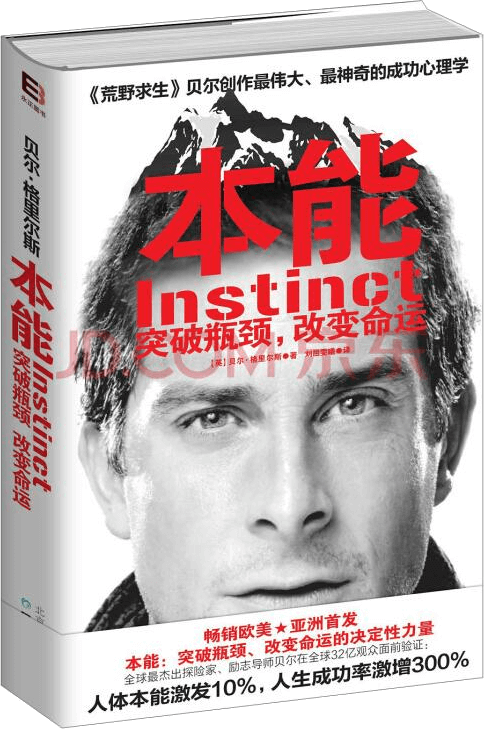

注：【】部分为笔者心得，非原文摘抄。
- 【当你想要追寻能够在你人生里留下印迹的东西时，应该遵从你的本性而不是世俗的成见。】
- 家人给你的建议都是出于对你无私的爱，但是，这并不意味着，他们给的建议真的适合你。
- 你的目标、梦想和志向常常与你的本能相关。
- 当埋头活在别人的梦想里时，你不太可能在那些你不感兴趣的琐事之间发现机会。
- 一旦你为自己而活，你才有可能找到属于自己的挑战和发展空间。
- 在禁受真正的考验之前，你永远不会知道自己的潜力有多大。
- 特种兵的训练方式就是通过身体上的折磨来考验你的心理承受能力。
- 在通往成功的路上，重要的是要拥有信念。
- 不管是在生活中还是在探险中的成功，都取决于我们对大脑的反复训练。
- 永远不要轻视人类意志本能的力量。
- 最好的事情不仅仅是金钱之类的事情。
- 【无论贫贱贵富，空洞的生活总是无法带来满足。】
- 花园里总是不缺音乐，但是需要我们有一颗安静的心去欣赏聆听。
- 【梦想驱动人生。】
- 那些在白天做梦的人是相当危险的，因为他们会用自己的实际行动为梦想装上眼睛，为了能让梦想成为现实，他们争分夺秒，毫不懈怠。
- 要敢想，确信你的梦想可以通过逐步规划和努力实现。只要实现它的核心前提条件是远见和勤奋努力，那就放开胆量去做。
- 【实现梦想需要强大的内心和鲜明的个性作后盾。】
- 金钱，如同成功和失败，其本身是毫不重要的，重要的是我们对待它的态度以及如何利用它产生价值。
- 在金钱面前，必须让头脑保持清醒，时刻掌握主动权。
- 全心全意地追随你的目标，你的内心将得到满足。
- 与善者为伍。
- 在生活中获得成功的一个重要秘诀是当其他人都只问“凭什么呢”时，而你却说“为什么不呢”。
- 如果你敢于追逐梦想并且能够坚持，梦想是可以正真的。
- 这世界上并不存在多少极限能真正阻止你去往更高更远的地方。
- 【如果你想获得前所未有的成功，首先你需要付出前所未有的努力。】
- 勇敢并非就是没有恐惧，而是当内心恐惧害怕时，我们仍能做出有效的反应。
- 【挑战自我才能有所突破。】
- 要想变得勇敢，唯一的办法就是去做那些让你心生畏惧的事情。
- 只有你自己的意志才能助你走得更高，从人群中脱颖而出。
- 不要为那些你影响范围之外的事情担心。
- 改变你说话的方式能够帮助你改变对生活，以及对所处境遇的态度。
- 没有人喜欢抱怨者。
- 你无法选择环境，但你可以选择自己的态度。
- 每天都需要新的动力。
- 冠军不会被消极情绪控制。
- 结交那些比你更优秀的朋友，比你更强大的队友是帮助你成长的绝佳途径。
- 保证营养非常重要：尽可能避免吃加工类食品，要多吃水果和蔬菜，尽可能吃未经过加工的食品。
- 打包行囊的艺术是成功的远征旅途必不可少的部分。
- 明智地审视一下你所携带的“行李”，以及你对这个世界的态度，它们定义了你是谁。
- 缺乏沉下心来甘于寂寞认真刻苦为你的目标做准备的决心，那么所谓的目标不过虚无缥缈。
- 【蛮干在失败以前容易被视为勇敢，但蛮干又蒙对的概率微乎其微，切忌侥幸。】
- 当你不确定方向时，要遵循的一个原则就是及时止步，停下来，重新评估，如果需要的话，向其他人寻求帮助。
- 每个人都曾制定过一份计划，直到他们被痛击的那一刻。——Mike Tyson
- 如果生活送你一只柠檬，那就把它变成柠檬汽水。——谚语
- 需求是发明之母。
- 【关键时刻，只能靠自己。】
- 生存训练中最有价值的部分之一就是自力更生。
- 让专家做你的顾问，而不是将军。——Winston Churchill
- 一个失败的决定总是强于不敢做决定。
- 社会地位总是虚幻可变的，但当浮华褪去，坦率真是的个性和行为才是持久发光的。
- 态度（而不是你的过去）决定了你的高度。
- 不要抢夺别人的成就。
- 一支队伍的真正价值永远不在于拥有炫目的高科技装备或者品牌赞助商，而是人，还有维系这支队伍的人与人之间的关系。
- 【高效的领导行为首先要以身作则。】
- 舒适的环境并不能带来满足和快乐。
- 再大的痛苦也不会永远持续，但是，骄傲和自豪将伴随你的目标始终不渝。
- 如果你想像鹰那样翱翔于天空，窝可不是什么适合久留的地方。
- 不要让你的紧张感阻止你去尝试那些“不可能完成的任务”。
- 逆境是唤醒人体本能的最好时机。
- 别在困难面前羞于表现，它们是你展现光芒的机会。
- 平凡和卓越之间的差别常常只是这个不起眼的字眼——多那么一点点。
- 当别人放弃的时候，你付出更多。这就是差别。
- 懦弱的批评不过是那些不敢尝试、缺乏勇气的人的自我安慰。
- 没有什么值得尝试的事情是简单容易的。
- 若你身处地狱，那就坚持走下去吧。——Winston Churchill
- 没有人喜欢自吹自擂者。真正的成功总是以谦卑为核心。
- 没有行动，一切都是空谈。
- 心怀感激是最好的能战胜抑郁的天然抵抗药。
- 研究那些不断上演的危机从何而来。
- 金钱的力量来源于其实际发挥的社会作用。
- 拥有的金钱数目并不是重点，重点是你如何利用手中的金钱，这才是富有的真正含义！
- 不要等你有了时间、有了钱，或者有了体力的时候才去行动。
- 生活美满就是“照顾好你的朋友和家人，并且有勇气追求梦想”。
- 成为一个值得信赖的人，不仅意味着要信守承诺，还意味着要言而有信。
- 改变自己利用时间的方式，就等于改变了你的人生。